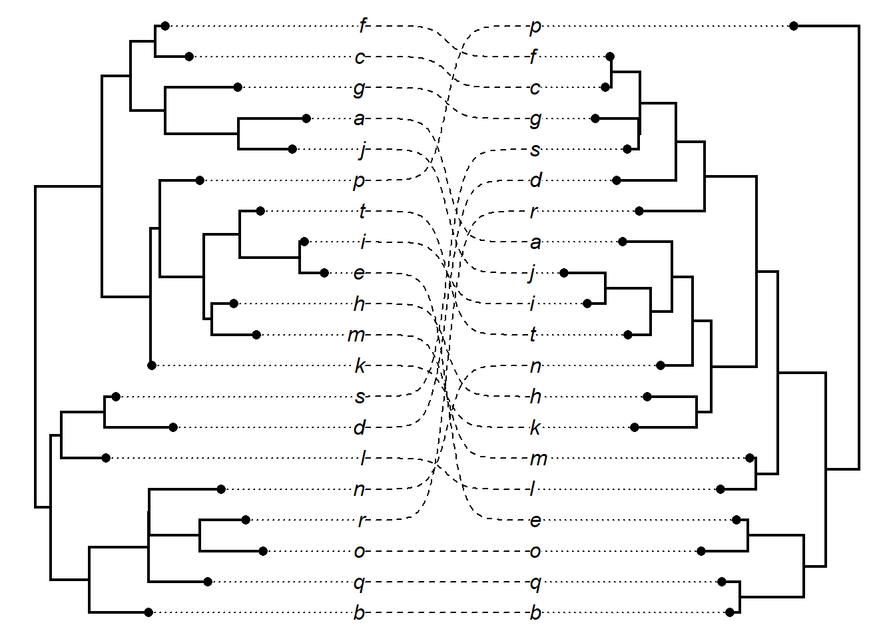
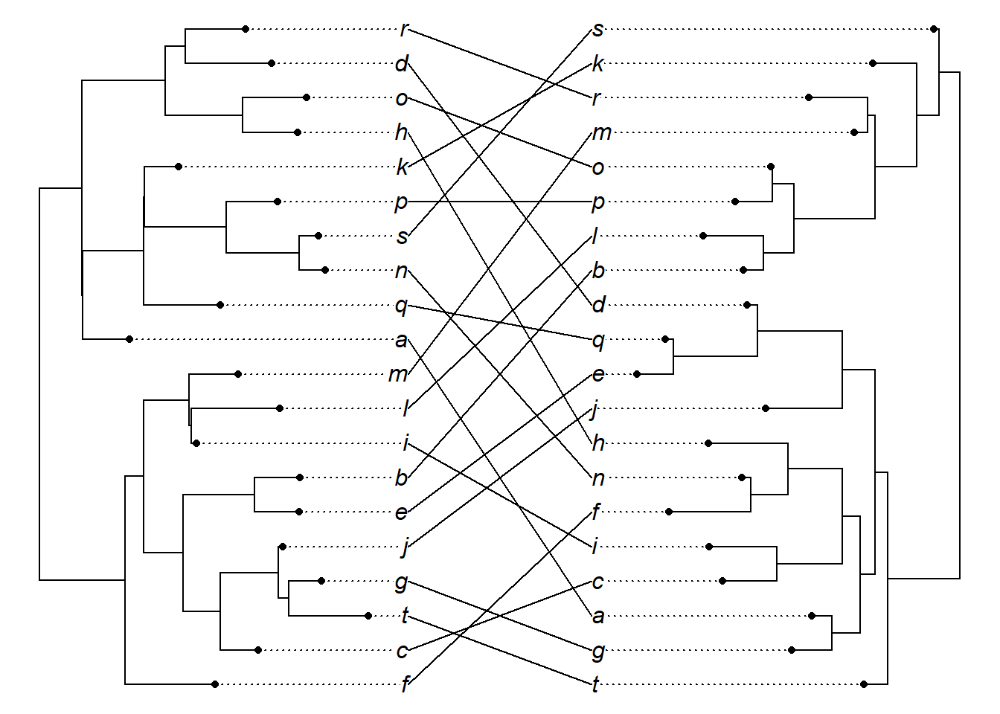
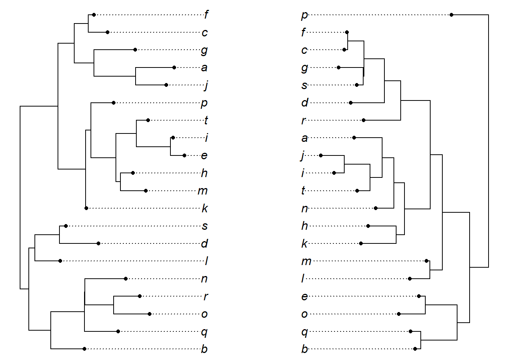
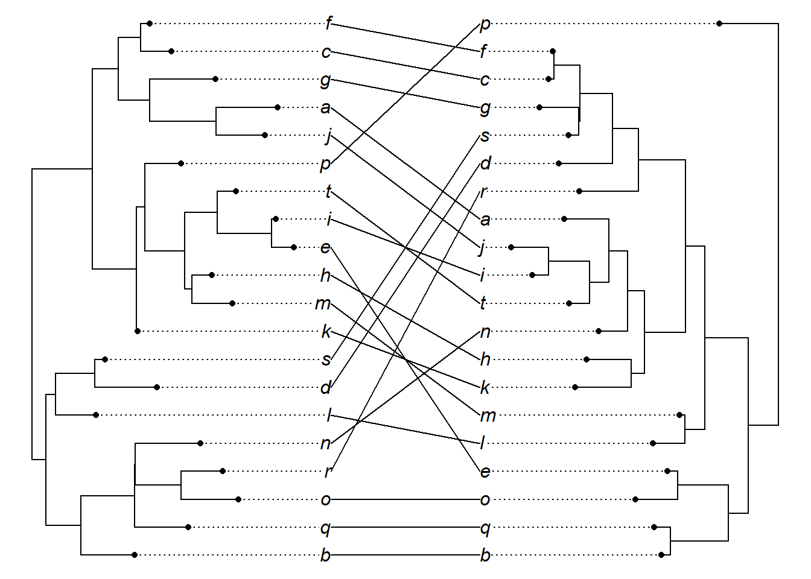

16 Exercícios
plants.tree <- "((((((((((((((Eudicots), Monocots), Magnoliids), Chloranthales), Autrobaileyales), Nymphaeales), Amborellales),((((Gnetales, Conifers), Gingkoales), Cycadales))),(((Sphenophytes, Marattiales), Filicales),(Ophioglossaceae, Psilophytes))),(Selaginellales, Lycopodiales)),(Bryophyta)),(Anthocerophyta)),(Marchantiophyta)));"
plants.tree <- read.tree(text = plants.tree)
plot(plants.tree)
edgelabels()
tree1 <- extract.clade(phy = plants.tree, node = 29)
plot(tree1)
# Tente a seleção do nó interativamente
# tree2 <- extract.clade(plants.tree, interactive = T)
# plot(tree2)plants.tree <- read.tree("./files/trees/apg.tree")
plot(plants.tree)
edgelabels()
plants.tree$node.label## [1] "angiosperms"
## [2] "nymphaeales_to_asterales"
## [3] "nymphaeales"
## [4] "cabombaceae_to_nymphaeaceae"
## [5] "austrobaileyales_to_asterales"
## [6] "austrobaileyales"
## [7] "schisandraceae_to_trimeniaceae"
## [8] "magnoliales_to_asterales"
## [9] "magnoliids"
## [10] "magnoliales_to_laurales"
## [11] "magnoliales"
## [12] "magnoliaceae_to_annonaceae"
## [13] "degeneriaceae_to_annonaceae"
## [14] "degeneriaceae_to_himantandraceae"
## [15] "eupomatiaceae_to_annonaceae"
## [16] "laurales"
## [17] "siparunaceae_to_lauraceae"
## [18] "siparunaceae_to_atherospermataceae"
## [19] "gomortegaceae_to_atherospermataceae"
## [20] "monimiaceae_to_lauraceae"
## [21] "hernandiaceae_to_lauraceae"
## [22] "piperales_to_canellales"
## [23] "piperales"
## [24] "asaraceae_to_aristolochiaceae"
## [25] "lactoridaceae_to_aristolochiaceae"
## [26] "piperaceae_to_saururaceae"
## [27] "canellales"
## [28] "poales_to_asterales"
## [29] "monocots"
## [30] "alismatales_to_poales"
## [31] "petrosaviales_to_poales"
## [32] "pandanales_to_poales"
## [33] "liliales_to_poales"
## [34] "asparagales_to_poales"
## [35] "commelinids"
## [36] "arecales"
## [37] "poales_to_zingiberales"
## [38] "poales"
## [39] "typhaceae_to_bromeliaceae"
## [40] "rapateaceae_to_poaceae"
## [41] "xyridaceae_to_poaceae"
## [42] "xyridaceae_to_cyperaceae"
## [43] "xyridaceae_to_eriocaulaceae"
## [44] "mayacaceae_to_cyperaceae"
## [45] "thurniaceae_to_cyperaceae"
## [46] "juncaceae_to_cyperaceae"
## [47] "anarthriaceae_to_poaceae"
## [48] "anarthriaceae_to_restionaceae"
## [49] "centrolepidaceae_to_restionaceae"
## [50] "flagellariaceae_to_poaceae"
## [51] "joinvilleaceae_to_poaceae"
## [52] "joinvilleaceae_to_ecdeiocoleaceae"
## [53] "commelinales_to_zingiberales"
## [54] "commelinales"
## [55] "commelinaceae_to_hanguanaceae"
## [56] "philydraceae_to_pontederiaceae"
## [57] "haemodoraceae_to_pontederiaceae"
## [58] "zingiberales"
## [59] "musaceae_to_costaceae"
## [60] "musaceae_to_lowiaceae"
## [61] "strelitziaceae_to_lowiaceae"
## [62] "cannaceae_to_costaceae"
## [63] "cannaceae_to_marantaceae"
## [64] "zingiberaceae_to_costaceae"
## [65] "asparagales"
## [66] "boryaceae_to_asparagaceae"
## [67] "boryaceae_to_hypoxidaceae"
## [68] "blandfordiaceae_to_hypoxidaceae"
## [69] "lanariaceae_to_hypoxidaceae"
## [70] "asteliaceae_to_hypoxidaceae"
## [71] "ixioliriaceae_to_asparagaceae"
## [72] "ixioliriaceae_to_tecophilaeaceae"
## [73] "doryanthaceae_to_asparagaceae"
## [74] "iridaceae_to_asparagaceae"
## [75] "xeronemataceae_to_asparagaceae"
## [76] "asphodelaceae_to_asparagaceae"
## [77] "asphodelaceae_to_xanthorrhoeaceae"
## [78] "amaryllidaceae_to_asparagaceae"
## [79] "liliales"
## [80] "melanthiaceae_to_liliaceae"
## [81] "petermanniaceae_to_alstroemeriaceae"
## [82] "colchicaceae_to_alstroemeriaceae"
## [83] "rhipogonaceae_to_liliaceae"
## [84] "rhipogonaceae_to_philesiaceae"
## [85] "smilacaceae_to_liliaceae"
## [86] "dioscoreales_to_pandanales"
## [87] "dioscoreales"
## [88] "burmanniaceae_to_dioscoreaceae"
## [89] "pandanales"
## [90] "stemonaceae_to_cyclanthaceae"
## [91] "pandanaceae_to_cyclanthaceae"
## [92] "alismatales"
## [93] "tofieldiaceae_to_potamogetonaceae"
## [94] "hydrocharitaceae_to_potamogetonaceae"
## [95] "hydrocharitaceae_to_alismataceae"
## [96] "hydrocharitaceae_to_butomaceae"
## [97] "scheuchzeriaceae_to_potamogetonaceae"
## [98] "aponogetonaceae_to_potamogetonaceae"
## [99] "juncaginaceae_to_potamogetonaceae"
## [100] "maundiaceae_to_potamogetonaceae"
## [101] "posidoniaceae_to_potamogetonaceae"
## [102] "posidoniaceae_to_cymodoceaceae"
## [103] "ruppiaceae_to_cymodoceaceae"
## [104] "zosteraceae_to_potamogetonaceae"
## [105] "ceratophyllales_to_asterales"
## [106] "eudicots"
## [107] "ranunculales"
## [108] "lardizabalaceae_to_papaveraceae"
## [109] "lardizabalaceae_to_ranunculaceae"
## [110] "lardizabalaceae_to_circaeasteraceae"
## [111] "menispermaceae_to_ranunculaceae"
## [112] "berberidaceae_to_ranunculaceae"
## [113] "proteales_to_asterales"
## [114] "proteales"
## [115] "nelumbonaceae_to_proteaceae"
## [116] "platanaceae_to_proteaceae"
## [117] "trochodendrales_to_asterales"
## [118] "buxales_to_asterales"
## [119] "gunnerales_to_asterales"
## [120] "gunnerales"
## [121] "superrosids_to_superasterids"
## [122] "superrosids"
## [123] "rosids"
## [124] "malvids_to_fabids"
## [125] "fabids"
## [126] "nitrogenfixing_to_COM"
## [127] "nitrogenfixing"
## [128] "fabales"
## [129] "fabaceae_to_polygalaceae"
## [130] "surianaceae_to_polygalaceae"
## [131] "rosales_to_fagales"
## [132] "rosales"
## [133] "rhamnaceae_to_urticaceae"
## [134] "barbeyaceae_to_dirachmaceae"
## [135] "elaeagnaceae_to_dirachmaceae"
## [136] "ulmaceae_to_urticaceae"
## [137] "cannabaceae_to_urticaceae"
## [138] "moraceae_to_urticaceae"
## [139] "cucurbitales_to_fagales"
## [140] "fagales"
## [141] "fagaceae_to_casuarinaceae"
## [142] "myricaceae_to_casuarinaceae"
## [143] "myricaceae_to_juglandaceae"
## [144] "ticodendraceae_to_casuarinaceae"
## [145] "ticodendraceae_to_betulaceae"
## [146] "cucurbitales"
## [147] "corynocarpaceae_to_begoniaceae"
## [148] "corynocarpaceae_to_coriariaceae"
## [149] "corynocarpaceae_to_apodanthaceae"
## [150] "cucurbitaceae_to_begoniaceae"
## [151] "tetramelaceae_to_begoniaceae"
## [152] "datiscaceae_to_begoniaceae"
## [153] "COM"
## [154] "oxalidales_to_malpighiales"
## [155] "oxalidales"
## [156] "connaraceae_to_elaeocarpaceae"
## [157] "connaraceae_to_oxalidaceae"
## [158] "cunoniaceae_to_elaeocarpaceae"
## [159] "brunelliaceae_to_elaeocarpaceae"
## [160] "brunelliaceae_to_cephalotaceae"
## [161] "malpighiales"
## [162] "ctenolophonaceae_to_podostemaceae"
## [163] "ctenolophonaceae_to_rhizophoraceae"
## [164] "erythroxylaceae_to_rhizophoraceae"
## [165] "irvingiaceae_to_pandaceae"
## [166] "ochnaceae_to_podostemaceae"
## [167] "bonnetiaceae_to_podostemaceae"
## [168] "bonnetiaceae_to_clusiaceae"
## [169] "calophyllaceae_to_podostemaceae"
## [170] "hypericaceae_to_podostemaceae"
## [171] "humiriaceae_to_ixonanthaceae"
## [172] "humiriaceae_to_salicaceae"
## [173] "achariaceae_to_salicaceae"
## [174] "goupiaceae_to_salicaceae"
## [175] "goupiaceae_to_violaceae"
## [176] "passifloraceae_to_salicaceae"
## [177] "lacistemataceae_to_salicaceae"
## [178] "peraceae_to_ixonanthaceae"
## [179] "peraceae_to_euphorbiaceae"
## [180] "rafflesiaceae_to_euphorbiaceae"
## [181] "phyllanthaceae_to_ixonanthaceae"
## [182] "phyllanthaceae_to_picrodendraceae"
## [183] "linaceae_to_ixonanthaceae"
## [184] "lophopyxidaceae_to_chrysobalanaceae"
## [185] "lophopyxidaceae_to_putranjivaceae"
## [186] "centroplacaceae_to_malpighiaceae"
## [187] "elatinaceae_to_malpighiaceae"
## [188] "balanopaceae_to_chrysobalanaceae"
## [189] "trigoniaceae_to_chrysobalanaceae"
## [190] "trigoniaceae_to_dichapetalaceae"
## [191] "euphroniaceae_to_chrysobalanaceae"
## [192] "celastrales"
## [193] "zygophyllales"
## [194] "malvids"
## [195] "geraniales_to_myrtales"
## [196] "geraniales"
## [197] "melianthaceae_to_greyiaceae"
## [198] "vivianiaceae_to_greyiaceae"
## [199] "francoaceae_to_greyiaceae"
## [200] "myrtales"
## [201] "onagraceae_to_penaeaceae"
## [202] "onagraceae_to_lythraceae"
## [203] "myrtaceae_to_penaeaceae"
## [204] "myrtaceae_to_vochysiaceae"
## [205] "melastomataceae_to_penaeaceae"
## [206] "crypteroniaceae_to_penaeaceae"
## [207] "alzateaceae_to_penaeaceae"
## [208] "crossosomatales_to_malvales"
## [209] "crossosomatales"
## [210] "staphyleaceae_to_crossosomataceae"
## [211] "guamatelaceae_to_crossosomataceae"
## [212] "stachyuraceae_to_crossosomataceae"
## [213] "aphloiaceae_to_strasburgeriaceae"
## [214] "geissolomataceae_to_strasburgeriaceae"
## [215] "picramniales_to_malvales"
## [216] "sapindales_to_malvales"
## [217] "huerteales_to_malvales"
## [218] "brassicales_to_malvales"
## [219] "malvales"
## [220] "thymelaeaceae_to_malvaceae"
## [221] "sphaerosepalaceae_to_malvaceae"
## [222] "cistaceae_to_dipterocarpaceae"
## [223] "sarcolaenaceae_to_dipterocarpaceae"
## [224] "cytinaceae_to_muntingiaceae"
## [225] "brassicales"
## [226] "akaniaceae_to_tropaeolaceae"
## [227] "moringaceae_to_brassicaceae"
## [228] "moringaceae_to_caricaceae"
## [229] "setchellanthaceae_to_brassicaceae"
## [230] "limnanthaceae_to_brassicaceae"
## [231] "koeberliniaceae_to_brassicaceae"
## [232] "koeberliniaceae_to_salvadoraceae"
## [233] "bataceae_to_salvadoraceae"
## [234] "emblingiaceae_to_brassicaceae"
## [235] "pentadiplandraceae_to_brassicaceae"
## [236] "resedaceae_to_gyrostemonaceae"
## [237] "capparaceae_to_brassicaceae"
## [238] "cleomaceae_to_brassicaceae"
## [239] "huerteales"
## [240] "gerrardinaceae_to_petenaeaceae"
## [241] "tapisciaceae_to_dipentodontaceae"
## [242] "sapindales"
## [243] "nitrariaceae_to_rutaceae"
## [244] "kirkiaceae_to_rutaceae"
## [245] "kirkiaceae_to_anacardiaceae"
## [246] "burseraceae_to_anacardiaceae"
## [247] "sapindaceae_to_rutaceae"
## [248] "simaroubaceae_to_rutaceae"
## [249] "saxifragales"
## [250] "paeoniaceae_to_saxifragaceae"
## [251] "paeoniaceae_to_daphniphyllaceae"
## [252] "altingiaceae_to_daphniphyllaceae"
## [253] "hamamelidaceae_to_daphniphyllaceae"
## [254] "cercidiphyllaceae_to_daphniphyllaceae"
## [255] "crassulaceae_to_saxifragaceae"
## [256] "crassulaceae_to_haloragaceae"
## [257] "aphanopetalaceae_to_haloragaceae"
## [258] "tetracarpaeaceae_to_haloragaceae"
## [259] "penthoraceae_to_haloragaceae"
## [260] "cynomoriaceae_to_saxifragaceae"
## [261] "iteaceae_to_saxifragaceae"
## [262] "grossulariaceae_to_saxifragaceae"
## [263] "superasterids"
## [264] "berberidopsidales"
## [265] "santalales_to_asterales"
## [266] "santalales"
## [267] "coulaceae_to_santalaceae"
## [268] "ximeniaceae_to_santalaceae"
## [269] "octoknemaceae_to_santalaceae"
## [270] "schoepfiaceae_to_santalaceae"
## [271] "schoepfiaceae_to_loranthaceae"
## [272] "schoepfiaceae_to_misodendraceae"
## [273] "opiliaceae_to_santalaceae"
## [274] "balanophoraceae_to_santalaceae"
## [275] "comandraceae_to_viscaceae"
## [276] "thesiaceae_to_cervantesiaceae"
## [277] "nanodeaceae_to_viscaceae"
## [278] "santalaceae_to_viscaceae"
## [279] "amphorogynaceae_to_viscaceae"
## [280] "caryophyllales_to_asterales"
## [281] "caryophyllales"
## [282] "droseraceae_to_polygonaceae"
## [283] "droseraceae_to_dioncophyllaceae"
## [284] "nepenthaceae_to_dioncophyllaceae"
## [285] "drosophyllaceae_to_dioncophyllaceae"
## [286] "ancistrocladaceae_to_dioncophyllaceae"
## [287] "frankeniaceae_to_polygonaceae"
## [288] "frankeniaceae_to_tamaricaceae"
## [289] "plumbaginaceae_to_polygonaceae"
## [290] "rhabdodendraceae_to_cactaceae"
## [291] "simmondsiaceae_to_cactaceae"
## [292] "asteropeiaceae_to_cactaceae"
## [293] "asteropeiaceae_to_physenaceae"
## [294] "macarthuriaceae_to_cactaceae"
## [295] "microteaceae_to_cactaceae"
## [296] "caryophyllaceae_to_cactaceae"
## [297] "caryophyllaceae_to_amaranthaceae"
## [298] "achatocarpaceae_to_amaranthaceae"
## [299] "stegnospermataceae_to_cactaceae"
## [300] "limeaceae_to_cactaceae"
## [301] "lophiocarpaceae_to_cactaceae"
## [302] "lophiocarpaceae_to_nyctaginaceae"
## [303] "kewaceae_to_nyctaginaceae"
## [304] "barbeuiaceae_to_nyctaginaceae"
## [305] "aizoaceae_to_nyctaginaceae"
## [306] "gisekiaceae_to_nyctaginaceae"
## [307] "molluginaceae_to_cactaceae"
## [308] "montiaceae_to_cactaceae"
## [309] "halophytaceae_to_cactaceae"
## [310] "halophytaceae_to_basellaceae"
## [311] "talinaceae_to_cactaceae"
## [312] "anacampserotaceae_to_cactaceae"
## [313] "portulacaceae_to_cactaceae"
## [314] "asterids"
## [315] "cornales"
## [316] "loasaceae_to_grubbiaceae"
## [317] "loasaceae_to_hydrangeaceae"
## [318] "curtisiaceae_to_grubbiaceae"
## [319] "ericales_to_asterales"
## [320] "ericales"
## [321] "balsaminaceae_to_tetrameristaceae"
## [322] "marcgraviaceae_to_tetrameristaceae"
## [323] "polemoniaceae_to_ericaceae"
## [324] "polemoniaceae_to_fouquieriaceae"
## [325] "sladeniaceae_to_ericaceae"
## [326] "sladeniaceae_to_pentaphylacaceae"
## [327] "sapotaceae_to_primulaceae"
## [328] "ebenaceae_to_primulaceae"
## [329] "theaceae_to_ericaceae"
## [330] "symplocaceae_to_ericaceae"
## [331] "symplocaceae_to_diapensiaceae"
## [332] "styracaceae_to_diapensiaceae"
## [333] "sarraceniaceae_to_ericaceae"
## [334] "sarraceniaceae_to_actinidiaceae"
## [335] "roridulaceae_to_actinidiaceae"
## [336] "clethraceae_to_ericaceae"
## [337] "cyrillaceae_to_ericaceae"
## [338] "lamids_to_campanulids"
## [339] "campanulids"
## [340] "aquifoliales"
## [341] "cardiopteridaceae_to_stemonuraceae"
## [342] "aquifoliaceae_to_phyllonomaceae"
## [343] "helwingiaceae_to_phyllonomaceae"
## [344] "asterales_to_paracryphiales"
## [345] "asterales"
## [346] "rousseaceae_to_campanulaceae"
## [347] "pentaphragmataceae_to_asteraceae"
## [348] "alseuosmiaceae_to_asteraceae"
## [349] "alseuosmiaceae_to_argophyllaceae"
## [350] "phellinaceae_to_argophyllaceae"
## [351] "stylidiaceae_to_asteraceae"
## [352] "menyanthaceae_to_asteraceae"
## [353] "goodeniaceae_to_asteraceae"
## [354] "calyceraceae_to_asteraceae"
## [355] "bruniales_to_paracryphiales"
## [356] "bruniales"
## [357] "apiales_to_paracryphiales"
## [358] "apiales"
## [359] "torricelliaceae_to_apiaceae"
## [360] "griseliniaceae_to_apiaceae"
## [361] "pittosporaceae_to_apiaceae"
## [362] "araliaceae_to_apiaceae"
## [363] "myodocarpaceae_to_apiaceae"
## [364] "dipsacales_to_paracryphiales"
## [365] "dipsacales"
## [366] "lamids"
## [367] "metteniusales_to_solanales"
## [368] "garryales_to_solanales"
## [369] "boraginales_to_solanales"
## [370] "solanales"
## [371] "montiniaceae_to_hydroleaceae"
## [372] "sphenocleaceae_to_hydroleaceae"
## [373] "convolvulaceae_to_solanaceae"
## [374] "lamiales"
## [375] "carlemanniaceae_to_orobanchaceae"
## [376] "carlemanniaceae_to_oleaceae"
## [377] "tetrachondraceae_to_orobanchaceae"
## [378] "platanthera_to_orobanchaceae"
## [379] "peltanthera_to_gesneriaceae"
## [380] "calceolariaceae_to_gesneriaceae"
## [381] "plantaginaceae_to_orobanchaceae"
## [382] "scrophulariaceae_to_orobanchaceae"
## [383] "stilbaceae_to_orobanchaceae"
## [384] "byblidaceae_to_orobanchaceae"
## [385] "byblidaceae_to_linderniaceae"
## [386] "pedaliaceae_to_orobanchaceae"
## [387] "pedaliaceae_to_acanthaceae"
## [388] "bignoniaceae_to_orobanchaceae"
## [389] "schlegeliaceae_to_orobanchaceae"
## [390] "schlegeliaceae_to_verbenaceae"
## [391] "schlegeliaceae_to_lentibulariaceae"
## [392] "thomandersiaceae_to_verbenaceae"
## [393] "lamiaceae_to_orobanchaceae"
## [394] "mazaceae_to_orobanchaceae"
## [395] "phrymaceae_to_orobanchaceae"
## [396] "paulowniaceae_to_orobanchaceae"
## [397] "gentianales"
## [398] "loganiaceae_to_apocynaceae"
## [399] "loganiaceae_to_gelsemiaceae"
## [400] "gentianaceae_to_apocynaceae"
## [401] "garryales"
## [402] "icacinales"grep("fabales", plants.tree$node.label)## [1] 128plants.tree$edge[,2]## [1] 1 440 441 2 442 3 4 443 444 5 445 6 7 446 447 448 449 8
## [19] 450 9 451 452 10 11 453 12 13 454 14 455 456 15 457 16 17 458
## [37] 18 459 19 20 460 461 462 21 463 22 23 24 464 25 26 465 27 28
## [55] 29 466 467 468 469 470 471 472 473 474 30 31 475 476 477 32 33 478
## [73] 34 479 480 481 35 36 482 37 483 38 484 39 40 485 486 41 487 42
## [91] 43 488 44 489 490 45 46 47 491 492 493 48 49 494 50 495 51 52
## [109] 496 53 497 498 54 499 55 56 500 501 57 58 502 59 60 503 61 504
## [127] 505 62 506 63 507 64 508 65 66 509 510 67 68 511 69 512 70 513
## [145] 71 514 515 72 73 516 74 75 517 76 77 518 78 519 79 520 80 81
## [163] 521 522 82 83 523 84 85 524 525 86 526 87 88 527 89 90 528 91
## [181] 529 92 93 94 530 95 531 96 532 533 534 97 98 99 535 100 536 101
## [199] 537 102 538 103 539 540 104 541 105 106 542 107 108 109 543 110 544 545
## [217] 111 546 547 548 112 113 549 114 550 115 116 117 551 552 118 553 119 554
## [235] 120 121 555 122 556 123 557 558 124 125 559 560 561 562 563 564 565 566
## [253] 126 567 127 568 128 129 569 570 130 571 572 131 573 132 133 134 574 135
## [271] 575 136 576 137 138 577 578 139 579 140 580 581 141 142 582 583 143 144
## [289] 145 584 146 585 586 587 147 148 149 588 150 589 151 590 152 153 591 592
## [307] 593 154 594 595 155 156 596 157 597 598 158 159 160 599 600 601 161 602
## [325] 162 163 603 164 165 604 166 605 606 167 168 607 169 608 170 171 609 610
## [343] 172 611 173 612 613 174 175 614 176 615 177 178 616 617 179 618 180 181
## [361] 619 620 182 183 621 184 185 622 623 186 187 188 624 189 625 190 191 626
## [379] 192 627 628 193 194 629 195 196 630 197 198 631 199 200 632 633 634 201
## [397] 635 202 636 203 637 204 205 638 206 639 640 207 208 641 642 209 210 643
## [415] 211 644 212 645 213 214 646 647 648 215 649 216 650 217 218 651 219 652
## [433] 220 221 653 222 654 655 656 657 223 658 224 659 225 226 660 227 661 228
## [451] 229 662 230 231 232 663 664 233 234 665 666 235 236 667 237 668 238 669
## [469] 670 239 671 240 241 672 242 673 243 674 244 245 246 675 247 676 248 249
## [487] 677 678 250 251 679 252 253 680 254 681 255 682 683 256 684 257 258 685
## [505] 259 686 260 261 262 263 687 264 688 689 265 690 266 691 267 692 268 269
## [523] 693 694 270 695 271 696 272 697 273 274 698 275 699 276 700 277 278 279
## [541] 701 702 280 281 703 704 282 283 705 284 706 285 286 287 707 288 708 709
## [559] 710 289 290 291 711 292 712 293 713 294 714 295 296 715 297 716 298 717
## [577] 299 300 718 719 720 721 301 722 302 723 303 724 304 305 725 726 306 307
## [595] 727 308 309 728 310 729 311 730 731 312 313 732 314 733 315 734 735 316
## [613] 736 317 318 737 319 738 320 739 740 321 741 322 742 323 743 324 744 325
## [631] 326 327 328 329 745 330 746 331 747 748 332 333 334 749 335 750 336 751
## [649] 337 338 752 753 754 755 339 340 341 342 756 343 344 345 757 758 759 346
## [667] 760 347 348 761 762 349 350 351 763 764 352 353 765 354 766 355 356 767
## [685] 357 358 768 769 359 770 360 361 771 772 362 773 363 364 774 365 775 366
## [703] 367 776 777 778 779 368 369 780 370 781 371 372 782 783 784 373 374 785
## [721] 375 786 787 376 788 377 378 789 379 790 380 791 381 792 382 383 384 793
## [739] 794 385 386 795 796 387 797 388 798 389 799 390 800 391 801 392 393 802
## [757] 803 394 395 396 804 805 806 807 808 809 397 810 398 399 811 400 401 812
## [775] 402 813 814 403 404 815 405 816 817 406 818 407 408 819 409 820 410 821
## [793] 411 822 823 412 413 824 825 414 415 416 826 417 827 828 829 418 419 830
## [811] 420 421 831 422 832 423 833 424 834 425 426 427 835 428 836 837 429 430
## [829] 838 431 432 433 839 434 435 436 840 437 438plants.tree$edge[257,1]## [1] 568tree <- extract.clade(phy = plants.tree, node = 565)
plot(tree)
nodelabels(tree$node.label, frame = "none", cex = 0.7)
tree <- extract.clade(phy = plants.tree, node = 568)
plot(tree)
nodelabels(tree$node.label, frame = "none", cex = 0.7)